CLIP论文精读
代码地址：https://github.com/OpenAI/CLIP.
原文链接：[2103.00020] Learning Transferable Visual Models From Natural Language Supervision (arxiv.org)
参考：[医学多模态融合] 医学图像 + 文本数据 多模态模型发展及预训练模型应用_多模态模型复现 作业 课程设计-CSDN博客
笔记详情 (bilibili.com)，李沐论文精读系列四：CLIP和改进工作串讲，
CLIP 论文逐段精读【论文精读】_哔哩哔哩_bilibili
CLIP：利用自然语言监督信号去学习一个迁移性能好的视觉网络
前言
模型结构
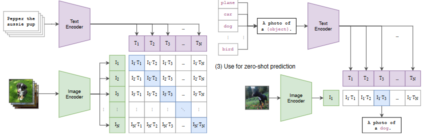
（1）模型的输入是image和text的配对，image encoder即可以是ResNet也可以是ViT。假设每个traning batch里有n个image-text pair，那么会分别得到n个图片特征和n个文本特征，然后在这些特征上做对比学习。对于对比学习而言，需要正样本和负样本，正样本就是配对的image-text pair，也就是特征矩阵中对角线的部分（n个）。其余非对角线元素即为负样本（个)。这样模型的训练过程就是最大化n个正样本的相似度，同时最小化个负样本的相似度
相似度是计算文本特征和图像特征的余弦相似性cosine similarity，所以在预训练过程中相当于训练text encoder与image encoder的编码参数，使得正样本相似度最大化，负样本相似度最小化。
对于无监督学习的方式是需要大量数据的。为了训练CLIP，OpenAI从互联网收集了共4个亿的文本-图像对，论文称之为WIT(Web Image Text。WIT质量很高，而且清理的非常好，其规模相当于JFT-300M，这也是CLIP如此强大的原因之一（后续在WIT上还孕育出了DALL-E模型）。
（2）prompt template
问：CLIP 经过预训练后只能得到视觉上和文本上的特征，并没有在任何分类的任务上去做继续的训练或微调，那么 CLIP 是如何做推理的呢？
作者提出prompt template：以 ImageNet 为例，CLIP 先把 ImageNet 这1000个类（如图中"plane", “car”, “dog”, …, “brid”）变成一个句子，也就是将这些类别去替代 “A photo of a {object}” 中的 “{object}” ，以 “plane” 类为例，它就变成"A photo of a plane"，那么 ImageNet 里的1000个类别就都在这里生成了1000个句子，然后通过先前预训练好的 Text Encoder 就会得到1000个文本的特征。
其实如果直接用单词（“plane”, “car”, “dog”, …, “brid”）直接去抽取文本特征也是可以的，但是因为在模型预训练时，与图像对应的都是句子，如果在推理的时候，把所有的文本都变成了单词，那这样就跟训练时看到的文本不太一样了，所以效果就会有所下降。此外，在推理时如何将单词变成句子也是有讲究的，作者也提出了prompt engineering和prompt ensemble来进一步提高准确率，而且不需要重新训练模型。
（3）Use for zero-shot prediction
将要预测的图像送入Image Encoder得到图像特征，然后与n个文本特征计算缩放的余弦相似度（和训练过程保持一致），然后选择相似度最大的文本对应的类别作为图像分类预测结果。
在clip的实际应用中，prompt的文本类别是可以改的，可以把ImageNet 这1000个类换成任何一个单词，输入的预测图片也可以是任何一个图片。例如输入一张三轮车的照片，prompt类别中也加入三轮车（这其实就是zero shot的方式，你想要预测什么类别的图像，就在prompt中把这个类别加进去）图像大概率会被分类为三轮车，但如果prompt中没有三轮车，那么图片永远不会被识别为三轮车，而是其他跟相似度最高的物体。（这就是clip的亮点和强大之处，在训练或者推理的时候不需要提前定好那么一个类别的列表）
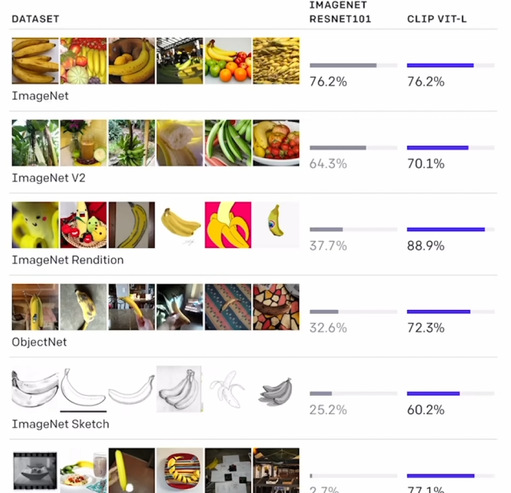
（因为与NLP的结合，clip学到的视觉特征与文本所描述的语义特征有非常强烈的联系，迁移效果也非常好）
摘要
最先进的计算机视觉系统利用一个固定类别数的数据集训练过的模型去预测类别。这种受限的监督形式限制了它们的通用性和可用性，因为需要额外的标记数据来识别任何其他新的视觉概念。直接从原始文本中学习图像是一种很有前途的替代方案，它利用了自然语言这种更广泛的监督资源。我们证明，预测哪个标题与哪个图像对应的简单预训练任务是一种高效且可扩展的方法，可以在从互联网收集的 4 亿对（图像、文本）数据集上从头开始学习 SOTA 图像表示（可以通过文本来识别物体，而不仅仅只是提前定义好的那么多类）。预训练后，使用自然语言来描述新的视觉概念，从而实现模型零样本传输到下游任务。
- CLIP是一个 zero-shot 的视觉分类模型，预训练的模型在没有微调的情况下在下游任务上取得了很好的迁移效果。
- 作者在30多个计算机视觉数据集上做了测试，涵盖了 OCR、视频中的动作检测、坐标定位等任务。
- CLIP 的效果：没有在 ImageNet 上做微调的CLIP，能和已经在 ImageNet 上训练好的Resnet 50打成平手。
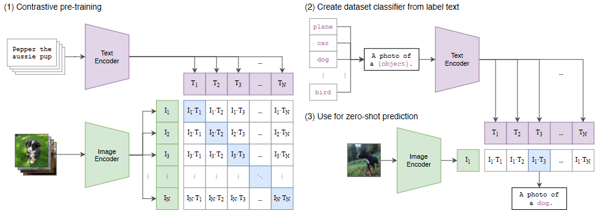
图 1.CLIP方法摘要。标准图像模型联合训练图像特征提取器和线性分类器来预测某些标签，而 CLIP 联合训练图像编码器和文本编码器来预测一批（图像、文本）训练示例的正确配对。在测试时，学习的文本编码器通过嵌入目标数据集类的名称或描述来合成零样本线性分类器。
1.Introduction and Motivating Work
直接从原始文本中学习的鱼训练方法在NLP领域取得了绝对性的成功。与下游任务无关的目标函数（例如自回归和掩码语言建模）已在计算、模型容量和数据方面扩展了多个数量级，从而稳步提高了能力。 “text-to-text”作为标准化输入输出接口的发展使架构能够零样本传输到下游数据集，消除了对专门输出头或数据集特定定制的需要。像 GPT-3这样的旗舰系统现在在许多具有定制模型的任务中具有竞争力，同时几乎不需要或不需要特定于数据集的训练数据。
这些结果表明，现代预训练方法在大规模无标注的文本集合下的效果超过了高质量的人工标注NLP数据集。然而，在计算机视觉等其他领域，在 ImageNet 等人工标注数据集上预训练模型仍然是标准做法。那么nlp的框架能否能否在计算机视觉领域带来类似的突破？从之前的工作来看应该没问题。
之前的一些工作：
通过训练模型来预测与图像配对的文本文档中的名词和形容词，探索如何改进基于内容的图像检索。
通过训练预测与图像相关的标题中的单词的分类器的权重空间中的流形学习，可以学习更多数据有效的图像表示。
通过在低级图像和文本标签特征之上训练多模态深度玻尔兹曼机来探索深度表示学习。乔林等人对这一工作进行了现代化改造，并证明经过训练来预测图像字幕中的单词的 CNN 可以学习有用的图像表示。他们将 YFCC100M 数据集中图像的标题、描述和主题标签元数据转换为词袋多标签分类任务，并表明预训练 AlexNet可以预测这些标签学习的表示形式与基于 ImageNet 的传输任务预训练类似。李等人然后将这种方法扩展到预测短语 ngrams 以及单个单词，并证明了他们的系统零样本传输到其他图像的能力通过根据学习到的视觉 n-gram 字典对目标类别进行评分并预测得分最高的类别来对数据集进行分类。 VirTex 、ICMLM 和 ConVIRT采用了更新的架构和预训练方法，最近展示了基于 Transformer 的语言的潜力建模、掩蔽语言建模和对比目标，以从文本中学习图像表示。
虽然作为概念证明令人兴奋，但使用自然语言监督进行图像表示学习仍然很少见。这可能是因为在常见基准测试中所展示的性能远低于替代方法。例如，李等人在 ImageNet 上零样本设置下仅达到 11.5% 的准确率。这远低于当前技术水平 88.4% 的准确率。它甚至低于经典计算机视觉方法 50% 的准确度。相反，范围更窄但更有针对性的弱监督使用提高了绩效。马哈詹等人表明，预测 Instagram 图像上与 ImageNet 相关的hash tag是一项有效的预训练任务。当针对 ImageNet 进行微调时，这些预训练模型的准确性提高了 5% 以上，并提高了当时的整体技术水平。科列斯尼科夫等人和 Dosovitskiy 等人 还证明了通过预训练模型来预测带有噪声标签的JFT-300M 数据集的类别，在更广泛的传输基准上取得了巨大的进步。
这一工作代表了当前从有限数量的受监督“黄金标签”中学习和从几乎无限量的原始文本中学习之间的务实中间立场。然而，有得必有失。这些工作都需要精心的设计，并在过程中将它们的监督数据集分别限制在1000和18291类。自然语言能够通过其通用性来表达并因此监督更广泛的视觉概念。之前这些都使用静态 softmax 分类器来执行预测，并且缺乏动态输出的机制。这严重削弱了它们的灵活性并限制了它们的“zero-shot”能力。
本文的工作：
这些弱监督模型与最近直接从自然语言学习图像表示的探索之间的一个关键区别在于规模。而 Mahajan 等人和科列斯尼科夫等人在加速器年（硬件的时间计数）对数百万至数十亿张图像进行了训练，VirTex、ICMLM和ConVIRT在加速器日对一到二十万张图像进行了训练。在这项工作中，我们缩小了这一差距（就是说之前的工作训练规模不够大），并研究了大规模自然语言监督训练的图像分类器的行为。借助互联网上这种形式的大量公开数据，我们创建了一个包含 4 亿对（图像、文本）对的新数据集，并证明了从头开始训练的 ConVIRT 的简化版本，我们称之为 CLIP（对比语言-图像预训练），是一种有效的自然语言监督学习方法。我们通过训练一系列涵盖近 2 个数量级（最大模型与最小模型参数量差了100倍）的参数量的八个模型来研究 CLIP 的可扩展性，并观察到迁移学习的性能与模型的大小基本呈正相关的。CLIP 与 GPT 系列类似，在预训练期间学习执行一系列广泛的任务，包括 OCR、地理定位、动作识别等。我们通过在 30 多个现有数据集上对 CLIP 的zero-shot 迁移进行基准测试来衡量这一点，并发现它可以与之前的特定任务监督模型竞争。我们还通过linear probe（预训练之后把backebone整个冻住，只训练预测头）证实了这些发现，并表明 CLIP 优于最好的公开可用的 ImageNet 模型，同时计算效率也更高。我们还发现zero-shot CLIP 模型比同等精度在ImageNet上有监督学习的模型泛化性更强，这表明任务无关模型的zero-shot评估更能代表模型的能力。
2.方法
2.1.自然语言监督
我们方法的核心是从自然语言中包含的监督中学习感知的想法。正如引言中所讨论的，这根本不是一个新想法，但是用于描述该领域工作的术语多种多样，甚至看似矛盾，并且陈述的动机也多种多样。张，戈麦斯等人，乔林等人和Desai & Johnson 都介绍了从文本与图像配对中学习视觉表示的方法，但分别将他们的方法描述为无监督、自监督、弱监督和监督。
我们强调，这一工作的共同点是将自然语言作为训练信号。所有这些方法都是从自然语言监督中学习的。尽管自然语言领域早期工作在使用topic model和 n-gram 表示时都是比较复杂的，但深度上下文表示学习的改进（例如bert）表明我们可以取之不尽用之不尽这种文本监督信号。
与其他训练方法相比，自然语言学习有几个潜在的优势。与用于图像分类任务需要大量label相比，扩展自然语言监督要容易得多，因为它不需要采用经典的“机器学习兼容格式”（例如规范的 1-of-N 多数投票“黄金标签”）进行标注。相反，适用于自然语言的方法可以从互联网上下载大量文本，从其中中包含的监督中被动地学习。与大多数无监督或自监督学习方法相比，从自然语言学习还具有重要优势，因为它不仅“仅仅”学习图像表示，而且还将该图像表示与语言连接起来，从而可以实现灵活的零样本迁移。在以下小节中，我们将详细介绍我们确定的具体方法。
2.2.创建足够大的数据集
现有工作主要使用三个数据集：MS-COCO 、Visual Genome 和 YFCC100M 。虽然 MS-COCO 和 Visual Genome 是高质量的人群标记数据集，但按照现代标准来看，它们很小，每个数据集大约有 100,000 张训练照片。相比之下，其他计算机视觉系统需要接受多达 35 亿张 Instagram 照片的训练。 YFCC100M（可容纳 1 亿张照片）是一种可能的替代方案，但每张图像的元数据稀疏且质量参差不齐。许多图像使用自动生成的文件名（例如 20160716 113957.JPG）或者相机的参数作为“label”。经过过滤仅保留带有自然语言标题和/或英文描述的图像后，数据集缩小了 6 倍，只剩下 1500 万张照片。这与 ImageNet 的大小大致相同。
自然语言监督的一个主要动机是利用互联网上公开提供的大量这种形式的数据。由于现有数据集没有充分反映这种可能性，因此仅考虑这些数据集的结果会低估这方面研究的潜力。为了解决这个问题，我们构建了一个包含 4 亿对（图像、文本）的新数据集，这些数据集是从互联网上的各种公开来源收集的。为了尝试尽可能广泛地涵盖一组视觉概念，我们在构建过程中搜索（图像、文本）对，其文本包括一组 500,000 个查询中的一个。我们近似分类，通过在每个查询中包含最多 20,000 个（图像、文本）对来平衡结果。生成的数据集的总字数与用于训练 GPT-2 的 WebText 数据集相似。我们将此数据集称为 WebImageText 的 WIT。
2.3.选择有效的预训练方法
最先进的计算机视觉系统使用大量的计算。马哈詹等人需要 19 个GPU年来训练他们的 ResNeXt101-32x48d。Xie 等人需要 33 个 TPUv3 核心年来训练他们的 Noisy Student EfficientNet-L2。考虑到这两个系统经过训练都只能预测1000个ImageNet 类，从自然语言中学习一组开放的视觉概念的任务似乎更令人畏惧。在我们的努力过程中，我们发现训练效率是成功扩展自然语言监督的关键，我们根据该指标选择了最终的预训练方法。
我们最初的方法与 VirTex 类似，从头开始联合训练图像 CNN 和文本transformer来预测图像的标题。然而，我们在有效扩展该方法时遇到了困难。在图 2 中，我们展示了一个 6300 万参数 Transformer 语言模型，该模型使用的计算量是其 ResNet-50 图像编码器的两倍，在相同的文字的情况下，它学习识别 ImageNet 类的速度比简单得多的预测图像的句子编码这类任务的baseline慢三倍。
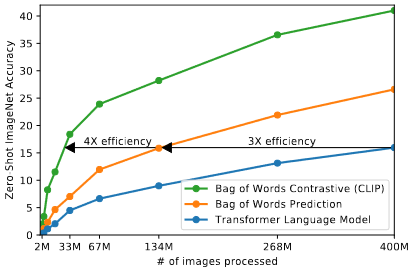
图 2.CLIP 在零样本传输方面比我们的图像标题baseline要高效得多。尽管表达能力很强，但我们发现基于 Transformer 的语言模型（即gpt式的预测文本）在零样本 ImageNet 分类方面相对较弱。在这里，我们看到它的学习速度比预测文本的词袋 (BoW) 编码(文本已经全局化抽成了一些特征，不用逐字逐句的去预测文本了）的基线慢 3 倍。将预测目标替换为CLIP 的对比目标（只用判断是不是图片文本对），效率进一步提高了 4 倍。
这两种方法有一个关键的相似之处。他们试图预测每张图像附带的文本的确切单词。这是一项艰巨的任务，因为与图像同时出现的描述、评论和相关文本种类繁多（即可以用不同的文本描述同一张图片，如果用预测模型来预测图片的文本描述，就会有很多不同的可能性）。最近在图像对比表示学习方面的工作发现，对比目标可以比同等的预测目标学习更好的表示。其他工作发现，虽然图像的生成模型可以学习高质量的图像表示，但它们比具有相同性能的对比模型需要更多的计算量。注意到这些发现，我们探索训练一个系统来解决可能更容易的代理任务，即仅预测哪个文本作为一个整体与哪个图像配对，而不是该文本的确切单词。从相同的词袋编码基线开始，我们将图 2 中的预测目标替换为对比目标，并观察到零样本传输到 ImageNet 的效率进一步提高了 4 倍。
给定一批 N 个（图像、文本）对，CLIP 被训练来预测批次中 N × N 个可能的（图像、文本）配对中的哪一个实际发生。为此，CLIP学习通过联合训练图像编码器和文本编码器来构建多模态嵌入空间，以最大化批次中 N 个真实对的图像和文本嵌入的余弦相似度，同时最小化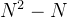个不正确配对的嵌入的余弦相似度。我们针对这些相似性分数优化对称交叉熵损失。在图 3 中，我们包含了 CLIP 实现核心的伪代码。据我们所知，这种批量构建技术首先作为multi-class N-pair loss被引入深度度量学习领域，被Oord等人推广作为 InfoNCE损失用于对比表示学习，同时最近被Zhang等人改编用于医学成像领域的对比（文本，图像)表示学习。
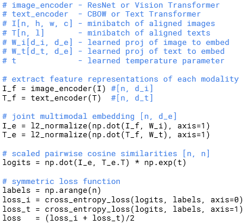
由于我们的预训练数据集很大，过度拟合并不是主要问题，并且与Zhang等人的实现相比，训练CLIP的细节得到了简化。我们从头开始训练 CLIP，而无需使用 ImageNet 权重初始化图像编码器或使用预训练权重初始化文本编码器。我们不使用表示和对比嵌入空间之间的非线性投影，这是 Bachman 等人引入的更改，并由 Chen 等人推广。 相反，我们仅使用线性投影将每个编码器的表示映射到多模态嵌入空间。我们没有注意到两个版本之间训练效率的差异，并推测非线性投影可能仅在自监督表示学习方法中与当前图像的细节共同适应。我们还删除了Zhang等人的文本转换函数。从文本中统一采样单个句子，因为 CLIP 预训练数据集中的许多（图像，文本）对只是单个句子。我们还简化了图像转换函数。随机方形裁剪调整过大小的图像是训练期间使用的唯一数据增强。最后，控制 softmax 中对数范围的温度参数 τ 在训练期间直接优化为对数参数化乘法标量（因为在对比学习中温度参数调参对结果影响很大，但是这里模型太大了作者不想调，所以设置为了一个标量)，以避免转变为超参数。
2.4.选择和扩展模型
我们考虑两种不同的图像编码器架构。首先，我们使用 ResNet-50作为图像编码器的基础架构，因为它的广泛采用和经过验证的性能。我们对原始版本He 等人的 ResNet-D进行了一些修改，选用来自Zhang 的抗锯齿rect-2模糊pooling。我们还用注意力池化机制取代了全局平均池层。注意力池化层被实现为单层“Transformer式”多头 QKV 注意力，其中query以全局平均池为条件作为图像的表示。对于第二种架构，我们使用最近推出的 Vision Transformer (ViT) 进行实验。我们密切关注他们的实现，只进行了微小的修改，即在变换器之前向组合补丁和位置嵌入添加额外的层归一化，并使用略有不同的初始化方案。
文本编码器是一个 Transformer，具有 Radford 等人中描述的架构修改。 作为基本尺寸，我们使用 63M 参数、12 层、512 宽的模型，具有 8 个注意力头。该转换器对具有 49,152 个词汇大小的文本的小写字节对编码 (BPE) 表示进行操作。为了计算效率，最大序列长度上限为 76。文本序列用 [SOS] 和 [EOS] 标记括起来，变压器最高层在 [EOS] 标记处的激活被视为经过层归一化的特征表示，然后线性投影到多模态嵌入空间中的文本。文本编码器中使用了屏蔽自注意力，以保留使用预先训练的语言模型进行初始化或添加语言建模来辅助目标的能力，对此方向的探索留待未来的工作。
虽然之前的计算机视觉研究通常通过单独增加宽度或深度来缩放模型，但对于 ResNet 图像编码器，我们采用 Tan & Le 的方法研究发现，在所有宽度、深度和分辨率上分配额外的计算效果优于仅将其分配到模型的一个维度。虽然 Tan & Le 调整了分配给 EfficientNet 架构每个维度的计算比率，但我们使用了一个简单的baseline，即平均分配额外计算以增加模型的宽度、深度和分辨率（就是说每个地方都加一点，而不是在某一个地方加很多）。对于文本编码器，我们仅将模型的宽度缩放为与计算出的 ResNet 宽度增加成正比，而根本不缩放深度，因为我们发现 CLIP 的性能对文本编码器的容量不太敏感。
2.5 训练
我们训练了一系列 5 个 ResNet 和 3 个 Vision Transformer。对于 ResNet，我们训练一个 ResNet-50、一个 ResNet-101，然后再训练 3 个，它们遵循 EfficientNet 的模型缩放方式，对应 ResNet-50 的大约 4 倍、16 倍和 64 倍的计算量。它们分别表示为 RN50x4、RN50x16 和 RN50x64。对于 Vision Transformer，我们训练了 ViT-B/32、ViT-B/16 和 ViT-L/14。我们将所有模型训练 32 个 epoch。我们使用 Adam 优化器，将解耦权重衰减正则化应用于所有非增益或偏差的权重，并使用余弦时间表衰减学习率。当训练 1 个 epoch 时，在基线 ResNet50 模型上结合使用网格搜索、随机搜索和手动调整来设置初始超参数。然后，由于计算限制，超参数被调整适应更大的模型。可学习的温度参数 τ 被初始化为相当于中的 0.07，并进行剪裁以防止 logits 缩放超过 100，我们发现这对于防止训练不稳定是必要的。我们使用非常大的batch_size大小 32,768，并且采用混合精度用于加速训练并节省内存。为了节省额外的内存，使用了梯度检查点、半精度 Adam 统计和半精度随机舍入文本编码器权重。嵌入相似度的计算也被分在不同的 GPU上去计算，仅计算其本地批量嵌入所需的成对相似度的子集。最大的 ResNet 模型 RN50x64 在 592 个 V100 GPU 上训练需要 18 天，而最大的 Vision Transformer 在 256 个 V100 GPU 上训练需要 12 天。对于 ViT-L/14，我们还以更高的 336 像素分辨率微调一个额外的 epoch，以提高类似于 FixRes 的性能。我们将此模型表示为 ViT-L/14@336px。除非另有说明，本文中报告为“CLIP”的所有结果都使用我们发现性能最佳的模型。
3. 实验
3.1. Zero-Shot Transfer
3.1.1. MOTIVATION
在计算机视觉中，零样本学习通常指的是对图像分类中未见过的对象类别进行泛化的研究。相反，我们在更广泛的意义上使用该术语，并研究对未见过的数据集的概括。 虽然无监督学习领域的许多研究都集中在机器学习系统的表示学习能力上，但我们致力于研究零样本迁移作为衡量机器学习系统任务学习能力的一种方式。在这种视角下，特定分布的数据集可以评估在一系列任务上的·1性能。然而，许多流行的计算机视觉数据集是由研究社区创建的，主要作为基准来指导通用图像分类方法的开发，而不是衡量特定任务的性能。虽然可以合理地说 SVHN 数据集衡量的是 Google 街景照片分布上的街道号码转录任务，但尚不清楚 CIFAR-10 数据集衡量的“真正”任务是什么。然而，很清楚 CIFAR-10 是从什么分布中提取的。在这类数据集上，零样本迁移更多地是对 CLIP 对分布偏移和域泛化而不是任务泛化的鲁棒性的评估。对此的分析请参见3.3节
据我们所知，Visual N-Grams首先以上述方式研究了向现有图像分类数据集的零样本迁移。这也是我们所知道的唯一一项使用通用预训练模型研究零样本迁移到标准图像分类数据集的工作，并作为上下文化 CLIP 的最佳参考点。他们的方法学习 142,806 个视觉 n-gram（涵盖 1 到 5-gram）的字典参数，并使用 Jelinek-Mercer 平滑的差分版本来优化这些 n-gram，在给定的图像的情况下以最大化文本 n-gram 的概率。为了执行零样本迁移，他们首先将每个数据集的类名称的文本转换为其 n 元语法表示，然后根据模型计算其概率，预测得分最高的那个。
我们专注于研究零样本迁移作为任务学习的评估，其灵感来自于 NLP 领域演示任务学习的工作。据我们所知，刘等人首先将任务学习确定为一种“意外的副作用”，即当经过训练生成维基百科文章的语言模型学会了在语言之间可靠地音译名称时。虽然 GPT-1专注于将预训练作为一种迁移学习方法来改进监督微调，但它还包括一项消融研究，证明四种启发式零样本迁移方法的性能在整个过程中稳步提高预训练，没有任何监督适应。该分析是 GPT-2的基础，GPT-2 专门专注于通过零样本迁移研究语言模型的任务学习能力。
3.1.2. USING CLIP FOR ZERO-SHOT TRANSFER
CLIP 经过预先训练，可以预测图像和文本片段在其数据集中是否配对。为了执行零样本分类，我们重用此功能。对于每个数据集，我们使用数据集中所有类的名称作为潜在文本配对的集合，并根据 CLIP 预测最可能的（图像，文本）对。更详细地说，我们首先通过各自的编码器计算图像的特征嵌入和可能文本集的特征嵌入。然后计算这些嵌入的余弦相似度，通过温度参数 τ 进行缩放，并通过 softmax 归一化为概率分布。请注意，该预测层是一个多项式逻辑回归分类器，具有 L2 归一化输入、L2 归一化权重、无偏差和温度缩放。当以这种方式解释时，图像编码器是计算机视觉主干，它计算图像的特征表示，而文本编码器是超网络（Ha et al., 2016），它根据指定的文本生成线性分类器的权重。类代表的视觉概念。雷霸等人。 (2015) 首先引入了这种形式的零样本图像分类器，而从自然语言生成分类器的想法至少可以追溯到 Elhoseiny 等人。 （2013）。继续这种解释，CLIP 预训练的每一步都可以被视为优化随机创建的计算机视觉数据集代理的性能，该数据集每个类包含 1 个示例，总共有 32,768 个通过自然语言描述定义的类。对于零样本评估，我们在文本编码器计算出零样本分类器后对其进行缓存，并将其重新用于所有后续预测。这使得生成它的成本可以在数据集中的所有预测中摊销。
3.1.3.与视觉 N-GRAM 的初步比较
在表 1 中，我们将 Visual N-Grams 与 CLIP 进行了比较。尽管没有使用该数据集可用的 128 万个人群标记训练示例，最佳 CLIP 模型将 ImageNet 上的准确率从概念验证的 11.5% 提高到 76.2%，并且与原始 ResNet-50 的性能相匹配。此外，CLIP 模型的 top-5 准确率明显高于其 top-1，并且该模型具有 95% 的 top-5 准确率，与 Inception-V4 相匹配。在零样本的情况下与强大的、完全监督的基线的性能相当的能力表明CLIP 是迈向灵活实用的零样本计算机视觉分类器的重要一步。如上所述，与 Visual N-Grams 的比较旨在将 CLIP 的性能置于上下文中，不应被解释为 CLIP 和 Visual N-Grams 之间的直接方法比较，因为两个系统之间的许多与性能相关的差异并未得到控制。例如，我们在 10 倍大的数据集上进行训练，使用每个预测需要近 100 倍计算量的视觉模型，可能使用超过 1000 倍的训练计算量，并使用基于 Transformer 的模型，而该模型在 Visual N-Grams 时并不存在已发布。（作者认为与Visual N-Grams的对比并不公平，尊重之前的工作）作为更仔细的比较，我们在 Visual N-Grams 训练的同一 YFCC100M 数据集上训练了 CLIP ResNet-50，发现它在 V100 GPU 一天内与他们报告的 ImageNet 性能相匹配。该基线也是从头开始训练的，而不是像 Visual N-Grams 那样从预先训练的 ImageNet 权重初始化。
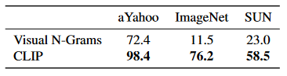
表 1.将 CLIP 与之前的零样本传输图像分类结果进行比较。 CLIP 极大地提高了所有三个数据集的性能。这一改进反映了 Visual N-Grams 开发 4 年来的许多差异。
CLIP 在其他 2 个报告数据集上的表现也优于 Visual N-Grams。在 aYahoo 上，CLIP 实现了错误数量减少 95%，而在 SUN 上，CLIP 使 Visual N-Grams 的准确性提高了一倍多。为了进行更全面的分析和压力测试，我们实验了一个更大的评估套件，详见附录 A。总的来说，我们从 Visual NGrams 中报告的 3 个数据集扩展到包括 30 多个数据集，并与 50 多个现有计算机视觉系统进行比较，以了解具体情况结果。
3.1.4. 提示工程和集成
大多数标准图像分类数据集将"信息命名"或"描述类别"视为事后的想法，这使得基于自然语言的零样本传输成为可能。绝大多数数据集仅使用标签的数字 ID 来注释图像，并包含将这些 ID 映射回其英文名称的文件。一些数据集，例如 Flowers102 和 GTSRB，在其发布的版本中似乎根本不包含此映射，从而完全防止了零样本传输。对于许多数据集，我们观察到这些标签可能是选择有些随意，并且没有预见到与零样本传输相关的问题，零样本迁移依赖于任务描述才能成功迁移。
一个常见的问题是一词多义。当类的名称是提供给 CLIP 文本编码器的唯一信息时，由于缺乏上下文，它无法区分哪个词义。在某些情况下，同一个单词的多种含义可能会作为不同的类包含在同一数据集中！这种情况发生在 ImageNet 中，cranes包含起重机和鹤两种意思。另一个例子是在 Oxford-IIIT Pet 数据集的类中发现的，其中单词“boxer”从上下文中清楚地指的是一种狗，但对于缺乏上下文的文本编码器来说也可能指的是一种运动员。（即只用一个单词去做prompt会经常出现歧义性的问题）
我们遇到的另一个问题是，在我们的预训练数据集中，与图像配对的文本一般是以某种方式描述图像的完整句子，只是单个单词的情况相对较少。为了帮助弥合这种分布差距（预训练的时候文本是句子，但推理的时候文本是单词，就可能出现distribution gap），我们发现使用提示模板“A photo of a {label}.”这是一个很好的默认值，有助于指定有关图像内容的文本。与仅使用标签文本的base line相比，这通常会提高性能。例如，仅使用此提示即可将 ImageNet 上的准确率提高 1.3%。
与围绕 GPT3 的“提示工程”讨论类似，我们也观察到通过为每个任务定制提示文本可以显着提高zero-shot的性能。下面是一些简单的示例。我们在几个细粒度图像分类数据集上发现它有助于指定类别。例如，在 Oxford-IIIT Pets 中，使用“A photo of a {label}, a type of pet.”来帮助提供上下文的方式效果很好。同样，在 Food101 上指定一种食物，在 FGVC Aircraft 上指定一种飞机也有帮助。对于 OCR （实体命名识别）数据集，我们发现在要识别的文本或数字周围加上引号可以提高性能。最后，我们发现在卫星图像分类数据集上，它有助于指定图像具有这种形式，并且我们使用“a satellite photo of a {label}.”的变体。（我个人认为，这种提示模板相当于给模型加了前置信息，比如卫星分类任务，相当于提供了卫星这一上下文信息，那么label匹配到的语义大概率会是卫星相关的语义，减少了歧义性）
我们还尝试了多个零样本分类器的集成，作为提高性能的另一种方法。这些分类器是通过使用不同的上下文提示来计算的，例如‘A photo of a big {label}”和“A photo of a small {label}”。我们在嵌入空间而不是概率空间上构建集成。这使我们能够缓存一组平均文本嵌入，以便在分摊到许多预测时，整体的计算成本与使用单个分类器的成本相同。我们观察到许多生成的零样本分类器的集成可以可靠地提高性能并将其用于大多数数据集。在 ImageNet 上，我们集成了 80 个不同的上下文提示，这比上面讨论的单个默认提示额外提高了 3.5% 的性能。当综合考虑时，prompt工程和集成可将 ImageNet 的准确性提高近 5%。在图 4 中，我们直观地看到了即时工程和集成如何改变一组 CLIP 模型的性能，与直接嵌入类名的无上下文基线方法相比。
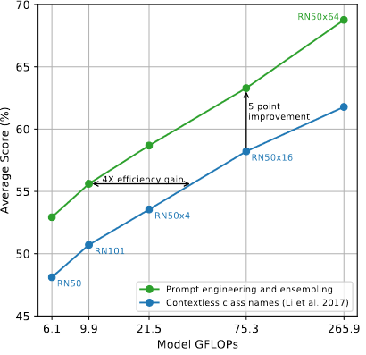
图 4. 快速工程和集成可提高零样本性能。与使用无上下文类名称的基线相比，即时工程和集成将 36 个数据集的零样本分类性能平均提高了近 5 个点。这种改进类似于使用基线零样本方法使用 4 倍以上的计算量所获得的收益，但在分摊到许多预测时是“免费的”。
3.1.5 zero-shot CLIP性能分析
由于计算机视觉的任务无关零样本分类器尚未得到充分研究，CLIP 提供了一个有希望的机会来更好地理解此类模型。在本节中，我们对 CLIP 零样本分类器的各种属性进行研究。作为第一个问题，我们简单地看看零样本分类器的表现如何。为了具体化这一点，我们与一个简单的现成基线的性能进行比较：在规范的 ResNet-50 的特征上拟合完全监督的、正则化的逻辑回归分类器。在图 5 中，我们展示了 27 个数据集的比较。有关数据集和设置的详细信息，请参阅附录 A。
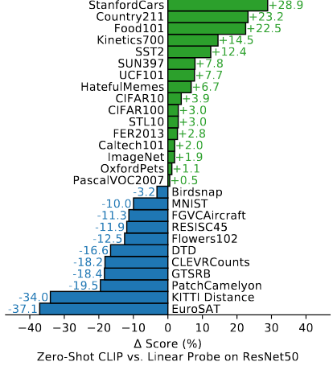
图5.零样本 CLIP 与完全监督的基线相比具有竞争力。在 27 个数据集评估中，在 16 个数据集（包括 ImageNet）零样本 CLIP 分类器的性能优于ResNet-50 特征的完全监督线性分类器。
零样本 CLIP在十个以上的数据集上的的性能略优于此基线，并在 27 个数据集中的 16 个上获胜。查看各个数据集会发现一些有趣的行为。在细粒度分类任务中，我们观察到性能差异很大。在其中两个数据集（Stanford Cars 和 Food101）上，零样本 CLIP相比ResNet-50的逻辑回归特征的方法表现优于20% 以上，而在另外两个数据集（Flowers102 和 FGVCAircraft）上，零样本 CLIP 的表现则低于 10% 以上。在 OxfordPets 和 Birdsnap 上，性能更加接近。我们怀疑这些差异主要是由于 WIT 和 ImageNet 之间每个任务的监督量不同造成的。在“一般”对象分类数据集（例如 ImageNet、CIFAR10/100、STL10 和 PascalVOC2007）上，在所有情况下零样本 CLIP 都略有优势。在 STL10 上，CLIP 总体达到了 99.3%，尽管没有使用任何训练示例，但这似乎是一种新的技术水平。 Zeroshot CLIP 在测量视频中动作识别的两个数据集上显着优于 ResNet-50。在 Kinetics700 上，CLIP 的性能优于 ResNet-50 14.5%。 Zeroshot CLIP 在 UCF101 上的性能也比 ResNet-50 的功能高出 7.7%。我们推测这是因为与 ImageNet 中以名词为中心的对象监督相比，自然语言为涉及动词的视觉概念提供了更广泛的监督。（像普通的物体分类的数据集，CLIP能很好的做zero-shot的迁移，这是因为如果图片有一个描述出来的物体，那么对应文本中也会有这个物体的描述，这样图像与文本就会匹配的很好，CLIP对这种物体也会比较敏感，但对于更抽象的分类数据集或者任务对于CLIP来说就会比较难）
看看零样本 CLIP 明显表现不佳的地方，我们发现零样本 CLIP 在一些专门的、复杂的或抽象的任务上相当薄弱，例如卫星图像分类（EuroSAT 和 RESISC45）、淋巴结肿瘤检测（PatchCamelyon）、合成场景中的物体计数（CLEVRCounts）、自动驾驶相关任务例如德国交通标志识别（GTSRB）、识别到最近汽车的距离（KITTI Distance）。这些结果凸显了零样本 CLIP 在更复杂的任务上的较差能力。相比之下，非专业人士可以稳健地执行其中多项任务，例如计数、卫星图像分类和交通标志识别，这表明还有很大的改进空间。然而，我们声明，（相对于少样本转移而言）目前不清楚衡量零样本转移的性能是否是对这种需要特定领域知识的困难任务的有意义的评估，例如几乎所有的淋巴结肿瘤分类（可能还有 CLIP）。
(作者认为对于这种困难任务，few-shot比zero-shot更加合理，从图六中也可以看出，当few-shot样本到达四之后的CLIP才与zero-shot CLIP性能持平）
虽然将零样本性能与完全监督模型进行比较可以体现 CLIP 的任务学习能力，但与少样本方法进行比较是更直接的比较，因为零样本是其极限。在图 6 中，我们直观地展示了零样本 CLIP 与少样本逻辑回归在许多图像模型特征上的比较，包括最佳的公开可用的 ImageNet 模型、自监督学习方法和 CLIP 本身。虽然直觉上认为零样本的性能低于单样本，但我们反而发现零样本 CLIP 与相同特征空间上的 4 样本逻辑回归的性能相匹配。这可能是由于零样本和少样本方法之间的重要差异。首先，CLIP 的零样本分类器是通过自然语言生成的，允许直接指定（“交流”）视觉概念。相比之下，“正常”的监督学习必须从训练示例中间接推断概念。基于上下文的示例学习的缺点是许多不同的假设可以与数据保持一致，尤其是在一次性情况下。单个图像通常包含许多不同的视觉概念。尽管有能力的学习者能够利用视觉线索和启发法，例如假设所演示的概念是图像中的主要对象，但这并不能保证。
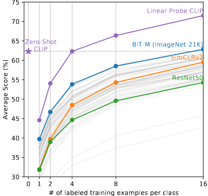
图 6. 零样本 CLIP 的性能优于少样本linear probe。零样本 CLIP 与在相同特征空间上训练的4样本线性分类器的平均性能相匹配，并且几乎与公共可用模型中16样本线性分类器的最佳结果相匹配。对于 BiT-M 和 SimCLRv2，突出显示了性能最佳的模型。浅灰色线是评估套件中的其他模型。此分析中使用了 20 个数据集，每类至少有 16 个示例。（之所以只有20个，是因为剩下的七个数据集中的示例没有16个）
3.2. 特征学习
虽然我们在上一节中通过零样本迁移广泛分析了 CLIP 的任务学习能力，但更常见的是研究模型的特征学习能力。有很多方法可以评估特征的质量，并且对于“ideal”特征应具有哪些属性存在分歧。在从模型中提取的特征上拟合线性分类器并测量其在各种数据集上的性能是一种常见的方法（backbone冻住，只训练最后一层FC）。另一种方法是测量模型端到端微调的性能（整个网络都放开)。这提高了灵活性，之前的工作已经令人信服地证明，在大多数图像分类数据集上，微调优于线性分类。虽然微调的高性能出于实际原因激发了其研究，但出于多种原因，我们仍然选择基于线性分类器的评估。我们的工作重点是开发高性能任务和与数据集无关的预训练方法。微调，因为它在微调阶段使表示适应每个数据集，可以补偿并潜在地掩盖在预训练阶段学习通用和鲁棒表示的失败。线性分类器由于灵活性有限，反而会突出这些失败并在开发过程中提供清晰的反馈(如果下游任务的数据集非常大，这时放开整个网络进行微调，可能原本预训练的效果并不好，但是微调之后的效果好，掩盖了预训练模型的失败）。对于 CLIP，训练监督线性分类器具有与其零样本分类器所使用的方法非常相似的额外好处，这使得第 3.1 节中可以进行广泛的比较和分析。最后，我们的目标是将 CLIP 与跨许多任务的一组全面的现有模型进行比较。在 27 个不同数据集上研究 66 个不同模型需要调整 1782 种不同的评估。微调开辟了更大的设计和超参数空间，这使得公平评估变得困难，并且比较其他大规模实证研究中讨论的各种技术的计算成本高昂。相比之下，线性分类器需要最少的超参数调整，并且具有标准化的实现和评估程序。有关评估的更多详细信息，请参阅附录 A。
图 10 总结了我们的发现。为了最大限度地减少可能引起确认或报告偏差问题的选择效应，我们首先研究 Kornblith 等人的 12 个数据集评估套件的性能。 （2019）。虽然 ResNet-50 和 ResNet-101 等小型 CLIP 模型的性能优于在 ImageNet-1K（BiT-S 和原始版本）上训练的其他 ResNet，但它们的性能低于在 ImageNet-21K (BiTM) 上训练的 ResNet。这些小型 CLIP 模型的性能也低于具有类似计算要求的 EfficientNet 系列中的模型。然而，使用 CLIP 训练的模型规模非常好，我们训练的最大模型 (ResNet-50x64) 在总体得分和计算效率方面略优于性能最佳的现有模型 (Noisy Student EfficientNet-L2)。我们还发现 CLIP 视觉转换器的计算效率比 CLIP ResNet 高出大约 3 倍，这使我们能够在计算预算内达到更高的整体性能。这些结果定性地重复了 Dosovitskiy 等人的发现。 （2020）报告称，当在足够大的数据集上进行训练时，视觉变换器比卷积网络具有更高的计算效率。我们最好的整体模型是 ViT-L/14，它在我们的数据集上以 336 像素的更高分辨率进行了 1 个额外 epoch 的微调。该模型的性能比整个评估套件中现有的最佳模型平均高出 2.6%。
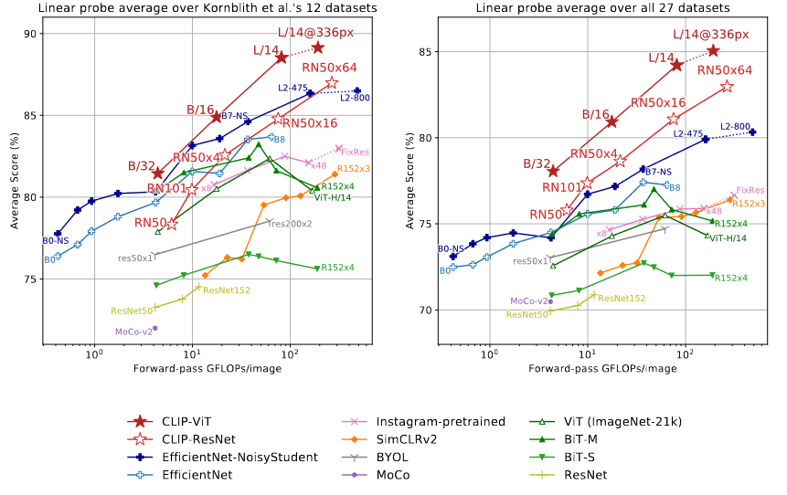
图 10. CLIP 模型的线性探针性能与最先进的计算机视觉模型的比较，包括 EfficientNet 、MoCo 、 Instagram 预训练的 ResNeXt 模型、BiT、ViT、SimCLRv2、BYOL和原始 ResNet 模型。 （左）分数是 Kornblith 等人研究的 12 个数据集的平均值。 （右）分数是对包含更多种分布的 27 个数据集进行平均的。（横坐标：做一遍前向过程需要多少计算量，纵坐标：在多个数据集上的平均准确度，越靠近左上角越好）虚线表示模型在比预训练更高分辨率的图像上进行了微调或评估。有关各个分数，请参阅表 10；有关每个数据集的图，请参阅图 20。
如图 21 定性所示，与之前通过随机初始化进行端到端训练的单个计算机视觉模型相比，CLIP 模型可以学习更广泛的任务。这些任务包括地理定位、光学字符识别、面部情绪识别和动作识别。 Kornblith 等人的评估套件中没有对这些任务进行测量。 Kornblith 等人认为这可能是选择偏差的一种形式。 针对与 ImageNet 重叠的任务的研究。为了解决这个问题，我们还测量了更广泛的 27 个数据集评估套件的性能。附录 A 中详细介绍了该评估套件，包括代表上述任务的数据集、德国交通标志识别基准以及改编自 VTAB 的其他几个数据集。
在这个更广泛的评估套件上，CLIP 的优势更加明显。所有 CLIP 模型，无论规模如何，在计算效率方面都优于所有评估的系统。最佳模型的平均得分比之前的系统提高了 2.6% 到 5%。我们还发现，自我监督系统在我们更广泛的评估套件上表现明显更好。例如，虽然 SimCLRv2 在 Kornblith 等人的 12 个数据集上平均表现仍低于 BiT-M。 (2019)，SimCLRv2 在我们的 27 个数据集评估套件上优于 BiT-M。这些发现表明继续扩大任务多样性和覆盖范围，以便更好地了解系统的“一般”性能。我们怀疑 VTAB 方面的额外评估工作是有价值的。
除了上面的聚合分析之外，我们还可视化了图 11 中所有 27 个数据集的最佳 CLIP 模型和评估套件中的最佳模型在每个数据集的性能差异。CLIP 在 21 个数据集上的表现优于 Noisy Student EfficientNet-L2。 27 个数据集。 CLIP 在需要 OCR（SST2 和 HatefulMemes）、地理定位和场景识别（Country211、SUN397）以及视频中的活动识别（Kinetics700 和 UCF101）的任务上改进最多。此外，CLIP 在细粒度汽车和交通标志识别方面也做得更好（Stanford Cars 和 GTSRB）。这可能反映了 ImageNet 中监督过于狭窄的问题。 GTSRB 提高 14.7% 之类的结果可能表明 ImageNet-1K 存在问题，它对所有交通和街道标志只有一个标签。这可能会鼓励监督表示破坏类内细节并损害细粒度下游任务的准确性。如前所述，CLIP 在多个数据集上的表现仍然低于 EfficientNet。不出所料，EfficientNet 相对于 CLIP 表现最好的数据集是它训练的数据集：ImageNet。 EffcientNet 在 CIFAR10 和 CIFAR100 等低分辨率数据集上的表现也略优于 CLIP。我们怀疑这至少部分是由于 CLIP 中缺乏基于规模的数据增强。 EfficientNet 在 PatchCamelyon 和 CLEVRCounts 上的表现也稍好一些，这些数据集的整体性能对于所有方法仍然是低下的
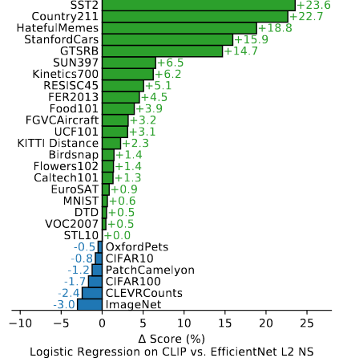
图 11.CLIP 的功能在各种数据集上都优于最佳 ImageNet 模型的功能。在 CLIP 的特征上拟合线性分类器在 27 个数据集中的 21 个上优于使用 Noisy Student EfficientNet-L2。
3.3 对自然分布变化的稳健性
4. 与人类表现的比较
CLIP 与人类表现和人类学习相比如何？为了更好地了解人类在与 CLIP 类似的评估环境中的表现，我们在其中一项任务上评估了人类。我们希望了解人类在这些任务中的零样本表现有多强，以及如果向他们展示一两个图像样本，人类的表现会提高多少。这可以帮助我们比较人类和 CLIP 的任务难度，并识别它们之间的相关性和差异。
我们让 5 个不同的人查看了 Oxford IIT Pets 数据集的测试部分中的 3669 张图像中的每一张，并选择 37 种猫或狗品种中哪一个与该图像最匹配。在零样本案例中，人类没有得到任何品种的例子，并被要求在不进行互联网搜索的情况下尽其所能地给它们贴上标签。在单次实验中，人类获得了每个品种的一张样本图像，而在双次实验中，人类获得了每个品种的两张样本图像。
一个可能的担忧是人类工作者在零样本任务中没有足够的积极性。 STL-10 数据集上的人类准确率高达 94%，注意力检查图像子集的 97-100% 准确率增加了我们对人类工作者的信任。
有趣的是，人类在每类仅使用一个训练样本的情况下，平均表现从 54% 上升到 76%，而额外训练样本的边际收益微乎其微。从zero-shot到one-shot的准确度的提高几乎完全取决于人类不确定的图像。这表明人类“知道他们不知道什么”，并且能够根据单个示例更新他们最不确定的图像的先验知识。鉴于此，虽然 CLIP 是一种很有前途的零样本性能训练策略（图 5），并且在自然分布偏移测试中表现良好（图 13），但人类从几个示例中学习的方式与本文中的few-shot方法。
正如 Lake 等人指出的，这表明仍然需要进行算法改进，以缩小机器和人类样本效率之间的差距。 等。由于 CLIP 的这些小样本评估并没有有效利用先验知识，而人类却这样做了，因此我们推测，找到一种将先验知识正确整合到小样本学习中的方法是 CLIP 算法改进的重要一步。据我们所知，在高分类器的特征之上使用线性分类器